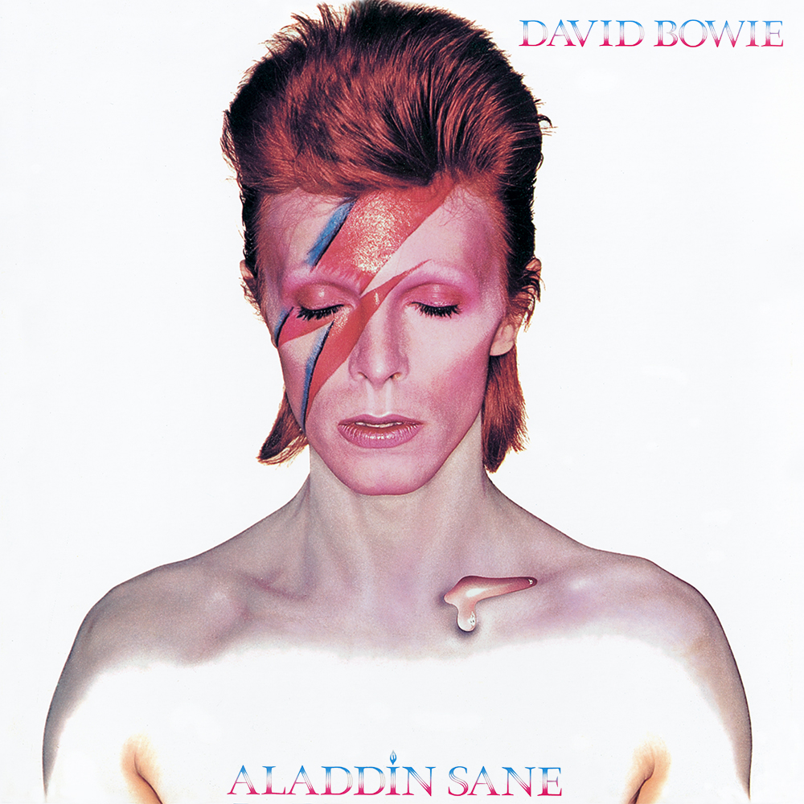

David Robert Jones was born in Brixton on January 8, 1947. At age 13, inspired by the jazz of the London West End, he picked up the saxophone and called up Ronnie Ross for lessons. Early bands he played with – The Kon-Rads, The King Bees, the Mannish Boys and the Lower Third –provided him with an introduction into the showy worlds of pop and mod, and by 1966 he was David Bowie, with long hair and aspirations of stardom rustling about his head
Kenneth Pitt signed on as his manager, and his career began with a handful of mostly forgotten singles and a head full of ideas. It was not until 1969 that the splash onto the charts would begin, with the legendary Space Oddity (which peaked at #5 in the UK). Amidst his musical wanderings in the late '60s, the young Bowie experimented with mixed media, cinema, mime, Tibetan Buddhism, acting and love. A first rock album, originally titled David Bowie then subsequently re-titled Man of Words, Man of Music and again as Space Oddity, paid homage to the kaleidoscopic influences of the London artistic scene, while hinting at a songwriting talent that was about to yield some of rock n roll's finest and most distinctive work--even if it would take the rest of the world a few years to catch up.